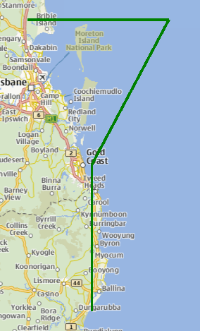

MapPolyline QML Type
The MapPolyline type displays a polyline on a map. More...
| Import Statement: | import QtLocation 5.13 |
| Since: | QtLocation 5.0 |
Properties
- line
- line.width : int
- line.color : color
- path : list<coordinate>
Methods
- void addCoordinate(coordinate)
- coordinate containsCoordinate(coordinate)
- coordinate coordinateAt(index)
- void insertCoordinate(index, coordinate)
- int pathLength()
- void removeCoordinate(index)
- void removeCoordinate(coordinate)
- void replaceCoordinate(index, coordinate)
- int setPath(path)
Detailed Description
The MapPolyline type displays a polyline on a map, specified in terms of an ordered list of coordinates. The coordinates on the path cannot be directly changed after being added to the Polyline. Instead, copy the path into a var, modify the copy and reassign the copy back to the path.
var path = mapPolyline.path; path[0].latitude = 5; mapPolyline.path = path;
Coordinates can also be added and removed at any time using the addCoordinate and removeCoordinate methods.
By default, the polyline is displayed as a 1-pixel thick black line. This can be changed using the line.width and line.color properties.
Performance
MapPolylines have a rendering cost that is O(n) with respect to the number of vertices. This means that the per frame cost of having a polyline on the Map grows in direct proportion to the number of points in the polyline.
Like the other map objects, MapPolyline is normally drawn without a smooth appearance. Setting the opacity property will force the object to be blended, which decreases performance considerably depending on the hardware in use.
Example Usage
The following snippet shows a MapPolyline with 4 points, making a shape like the top part of a "question mark" (?), near Brisbane, Australia. The line drawn is 3 pixels in width and green in color.
Map {
MapPolyline {
line.width: 3
line.color: 'green'
path: [
{ latitude: -27, longitude: 153.0 },
{ latitude: -27, longitude: 154.1 },
{ latitude: -28, longitude: 153.5 },
{ latitude: -29, longitude: 153.5 }
]
}
}

Property Documentation
This property is part of the line property group. The line property group holds the width and color used to draw the line.
The width is in pixels and is independent of the zoom level of the map. The default values correspond to a black border with a width of 1 pixel.
For no line, use a width of 0 or a transparent color.
path : list<coordinate> |
This property holds the ordered list of coordinates which define the polyline.
Method Documentation
Adds the specified coordinate to the end of the path.
See also insertCoordinate, removeCoordinate, and path.
coordinate containsCoordinate(coordinate) |
Returns true if the given coordinate is part of the path.
This method was introduced in QtLocation 5.6.
coordinate coordinateAt(index) |
Gets the coordinate of the polyline at the given index. If the index is outside the path's bounds then an invalid coordinate is returned.
This method was introduced in QtLocation 5.6.
Inserts a coordinate to the path at the given index.
This method was introduced in QtLocation 5.6.
See also addCoordinate, removeCoordinate, and path.
int pathLength() |
Returns the number of coordinates of the polyline.
This method was introduced in QtLocation 5.6.
See also path.
Removes a coordinate from the path at the given index.
If index is invalid then this method does nothing.
This method was introduced in QtLocation 5.6.
See also addCoordinate, insertCoordinate, and path.
Removes coordinate from the path. If there are multiple instances of the same coordinate, the one added last is removed.
If coordinate is not in the path this method does nothing.
See also addCoordinate, insertCoordinate, and path.
Replaces the coordinate in the current path at the given index with the new coordinate.
This method was introduced in QtLocation 5.6.
See also addCoordinate, insertCoordinate, removeCoordinate, and path.
int setPath(path) |